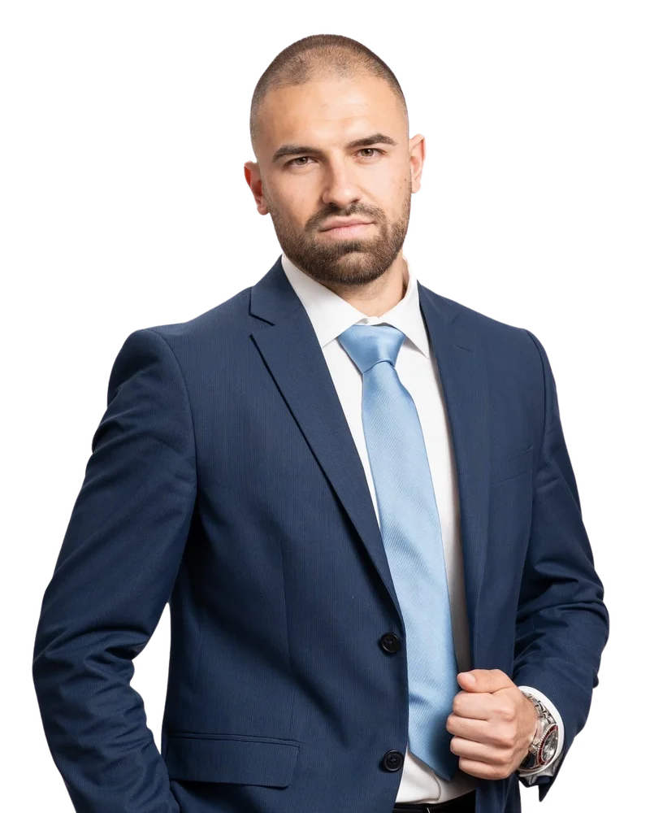

Михаил Митов
Изпълнителен директор на УКО България. Кръгова икономика и биогорива, спортен мениджмънт, младежка и европейска политика.
Биография
Михаил Илиев Митов е изпълнителен директор на УКО България – пионерът в рециклирането на отпадъчни масла в България. Компанията събира използвано олио от над 8 000 клиенти в цялата страна и го доставя като сертифицирана суровина за биодизел и устойчиво авиационно гориво (SAF).
Преди това е изпълнителен директор на ФК „Янтра“ Габрово (2021–2025), където увеличава годишните спонсорски приходи с 300%, привлича 50 нови търговски партньори и мулти-милионни инвестиции в спортна инфраструктура, и изгражда професионална детска академия с 300 деца. Между 2022 и 2025 г. е член на Съвета на директорите на M-texx Textile Recycling.
От януари 2025 до април 2026 г. е народен представител в 51-вото Народно събрание от ПП ГЕРБ за 7 МИР Габрово – член на Комисията по въпросите на децата, младежта и спорта и на Комисията по европейските въпроси и контрол на европейските фондове. От юни 2025 до април 2026 г. е член на Парламентарната асамблея на Съвета на Европа (комисиите по политически въпроси и демокрация и по равнопоставеност и недискриминация).
Завършва „Спортни науки и бизнес“ в Solent University, Саутхемптън, с първа степен с отличие (First-Class Honours), където работи и в Southampton FC и Hampshire FA. Носител е на UEFA Certificate in Football Management (University of Lausanne) с отличие и участник в програмата на Държавния департамент на САЩ за млади европейски лидери (IVLP). Магистрант по „Младежка политика и спорт“ в НСА „Васил Левски“.
Опит
- Изпълнителен директор (CEO)УКО България · септ. 2026 – сега
- Член на Парламентарната асамблея на Съвета на ЕвропаСтрасбург · юни 2025 – апр. 2026
- Народен представител, 51-во Народно събраниеПП ГЕРБ, 7 МИР Габрово · яну. 2025 – апр. 2026
- Член на Съвета на директоритеM-texx Textile Recycling · юни 2022 – яну. 2025
- Изпълнителен директор (CEO)ФК „Янтра“ Габрово · май 2021 – яну. 2025
- Оперативен мениджърФК „Янтра“ Габрово · юли 2020 – юни 2021
- Football Development Officer / League CoordinatorHampshire FA, Англия · яну. – апр. 2020
- Hospitality Leader / Events CoordinatorSouthampton FC, Англия · окт. 2018 – юни 2020
Образование и квалификации
- Магистър, Младежка политика и спортНСА „Васил Левски“ · 2026 – сега
- UEFA Certificate in Football Management – с отличиеUniversity of Lausanne / УЕФА · 2023 – 2024
- Бакалавър, Sports Studies and Business – First-Class HonoursSolent University, Саутхемптън · 2017 – 2020
- International Visitor Leadership Program – Young European LeadersДържавен департамент на САЩ · 2026
- Football Tactical AnalystBarça Innovation Hub – Universitas · 2021
- The FA Level 1: Psychology; Talent IdentificationThe Football Association · 2019
- Средно образование, профил Математика133 СУ „А. С. Пушкин“, София · 2012 – 2017
В медиите
- Михаил Митов положи клетва като депутат на мястото на Томислав Дончев · Gabrovonews, 17.01.2025
- Михаил Митов от ГЕРБ става народен представител от Габрово · БТА, 17.01.2025
- Футболен шеф от Габрово става депутат от ГЕРБ · 24 Пловдив, 17.01.2025
- Наредихме областта ни сред водещите в страната по инвестиции в спортна база · Gabrovonews, 16.04.2026
- Михаил Митов завърши академичната програма на УЕФА за футболен мениджмънт · sport-gabrovo.com, 01.02.2024
- Габрово е град с голям футболен потенциал · 100 вести, 2022